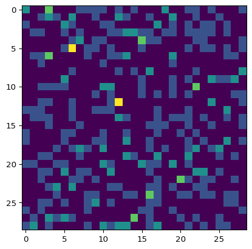

To increase readability, I decided to decouple important discoveries from ones that did not produce positive results. This, however, does not mean that experiments which produced no useful output were not made. This document contains most of them, along with brief descriptions. But do not expect this document to be very orderly.
Code
import pandas as pdimport numpy as npimport matplotlib.pyplot as pltimport syssys.path.append('..')from cryptext.cicada import liberprimus as lp, gematriaprimus as gp, futhorcfrom cryptext.analytics import ioc, expected_ioc, diff_text, crosstext_iocfrom cryptext.dmath import is_primefrom cryptext.alphabet import Alphabetfrom cryptext.ciphers import atbash, caesar, vigenerefrom cryptext.cicada.liberprimus import Sectionfrom helperfunctions import*
3-letter words
When looking for cribs in the LP2, I found a surprising amount of 3-letter words that both started and ended with ‘ᛇ’. However, they seem to be the only ones like it, and given the other letters and combinations, probably some outliers can be expected.
Code
# This is just kinda weird; i guess given all the other variables some variability should be expected, but still... kinda weirdwords = []for s in lp.load_unsolved().sections()[:-3]: words += s.words()words = [w for w in words iflen(w) ==3]rune ='ᛇ'# startrune, endrune = futhorc.symbols()[5], futhorc.symbols()[6]startrune, endrune = rune, runestart =sum(1for w in words if w.startswith(startrune))end =sum(1for w in words if w.endswith(endrune))surround =sum(1for w in words if w.startswith(startrune) and w.endswith(endrune))print(f'start match rate expected {1/29:.4f}, got {start /len(words):.4f}')print(f'end match rate expected {1/29:.4f}, got {end /len(words):.4f}')print(f'both match rate expected {1/(29*29):.4f}, got {surround /len(words):.4f}')print(len(words), start, surround)# print(words)print([w for w in words if w.startswith(startrune)])'''ᚻᛒᚾᛡ-ᛈᛒᚾ-ᛇᛄᚦ-ᚪᛝᚣᛉ-ᛒᛞᛈ ᛈᛞᚦ.ᛇᛞᛇ-ᚫᛚᚳ-ᛡᛇ-ᛠᚻᛠᚷᛋᚫᛈᚹᛗᛠ-ᛇᛄᛇ-ᚹᚻᛁ-ᚷᛠᛒᚢᚣᚻᚣ ᚷᚻᛋᛗ-ᛇᛞᛇ-ᚣ-ᛡᛖᛏᛠᚢᛡ-ᚩᚾᛠᚩ'''# maybe create a generic graph to see if anything's up; EDIT: nope.
start match rate expected 0.0345, got 0.0308
end match rate expected 0.0345, got 0.0420
both match rate expected 0.0012, got 0.0112
357 11 4
['ᛇᛄᚦ', 'ᛇᛞᛇ', 'ᛇᚫᚪ', 'ᛇᚾᚪ', 'ᛇᚾᛇ', 'ᛇᚢᚩ', 'ᛇᚪᛄ', 'ᛇᚢᚷ', 'ᛇᛝᛠ', 'ᛇᛄᛇ', 'ᛇᛞᛇ']
counters = [ [0] * futhorc.size() for _ inrange(futhorc.size()) ]words = []for s in lp.load_unsolved().sections()[:-3]: words += s.words()words = [w for w in words iflen(w) >2andlen(w) <4]for w in words: start = futhorc.index(w[0]) end = futhorc.index(w[2]) counters[start][end] +=1fig, ax = plt.subplots()ax.imshow(counters)plt.show()# print(futhorc.index('ᛇ'))

Low-Doublets & Words
If the cipher is word-oriented, are low-doublets also word-oriented? I.e. will there be a reasonable difference between low doublet rate when measuring between words, or perhaps first-to-second letter of a word? As it turns out… no, at least not in a significant way. This kind of indicates that if there is a word-based cipher, then the doublet reduction acts independently of it, or is incorporated into it both for in-word and between-word.
Code
def analyze_doublets(elts: list[tuple[str, str]]): diff_data = [0] * futhorc.size()for a, b in elts: diff_data[(futhorc.index(b) - futhorc.index(a)) % futhorc.size()] +=1print(diff_data)if diff_data[0] >0:print('Same-rune doublet {:.2f}x less likely than others'.format( (sum(diff_data[1:]) /len(diff_data)) / diff_data[0] ))else:print('No same-rune doublets occured.')print('BETWEEN ALL SYMBOLS:')elts = lp.load_unsolved().symbols()analyze_doublets(zip(elts[:-1], elts[1:]))print()print('BETWEEN WORDS:')elts = lp.load_unsolved().words()analyze_doublets(zip((e[-1] for e in elts[:-1]), (e[0] for e in elts[1:])))print()print('1st to 2nd LETTERS OF WORDS:')analyze_doublets(zip((e[0] for e in elts iflen(e) >1), (e[1] for e in elts iflen(e) >1)))print()print('BETWEEN SENTENCES:')elts = [ s.symbols() for s in lp.load_unsolved().sentences() iflen(s.symbols()) >0 ]analyze_doublets(zip((e[-1] for e in elts[:-1]), (e[0] for e in elts[1:])))
The unsolved Liber Primus sections have quite a few weird things about them even when it comes to their word structure while ignoring runes. There are a good deal of sentences ending with a single letter, and several sentences (even when headings are excluded) are very short. What to make of this, I don’t know. These things may indicate that there is something else going on besides pure rune substitution, since the sentences sometimes just feel too weird. Or, if you believe it is in fact just pure substitution, then maybe some of these sentences can be useful for cribbing, with possible sentences being “Each day.”, “I (saw|see) a wing.”, “Value it.”, etc.
ᛈᛞᚦ.ᛇᛞᛇ-ᚫᛚᚳ-ᛡᛇ-(ᛠᚻ-)... (start of second paragraph of spirals)
DEATH. OUR DEATH IS (THE?)...
ᛞᚩ-ᛟᛏᚦᚫ.ᚳᚹᛄ-ᛉᛠ-ᚷᛠᛗ. (end of spirals - not the same paragraph as above)
BE GOOD.
DO GOOD.
BE NICE.
WE SEEK.
WE LOOK.
WE LIVE.
~~WE LEAD.~~ (this one is 3 letters)
...
THEY DO NOT.
YOU DO NOT.
THAT IS EASY.
THEN WE LEAD.
AND WE LEAD.
(END (TO|OF) ALL) doesn't make that much sense to me, and how it would pair with the previous sentence
...7-ᚷ-ᛚᛄᛖᚫ.ᚣᛁᚫᚹᚻ-ᚫᛏ. (branches)
... ᛇᚻᚣᚪᛈ-ᚾᛋ. ...
...7 A WEEK.(value it?/every eon?)
ᛇᛏᚢᚩ-ᛟᛞᚠᚢᛋ.
ᚠᚢᛚᛗ-ᚪᛠᚣᛟᚪ. (before or start of moebius)
LOOK WITHIN.
TRUTH WITHIN.
FORM
YOUR
SEEK
FIND
ENEMY
VALUE
TRIAL
etc...
Words with apostrophes may theoretically also be of cribbing value, but I could not reasonably limit their content.
Code
sentences = [ s for s in lp.load_unsolved().sentences() iflen(s.words()) >0 ]headings = ['ᛋᚻᛖᚩᚷᛗᛡᚠ-ᛋᚣᛖᛝᚳ','ᛚᛄ-ᛇᚻᛝᚳᚦᛏᚫᛄᛏᛉᚻ-ᛏᚢᛟ','ᛈᛞᚦ','ᚪᛏᛉᛒ-ᛗ-ᚷᛡᛋᛒ-ᛉᛇ','ᛚᚢᛝᚾ-ᚳᚢ-ᛒᚾᛏᚠᛝ','ᚢᚪ-ᚹᛝᚷᛉᛞᚷ-ᛁᛒᛁ-ᛇᛏᛒᛁᚣ','ᛗᛈᚣ-ᛚᛋᚩᚪᚫᚻᛚᛖᛇᛁᛗᛚ-ᛚᛋᚳᛈ','ᛞᛇ-ᛉᚳᚠᛁᚪᚹᚻᚷ','ᛝᚦᛇ-ᛁᚠᚳᛟᛇ','ᛡᚳᛋ','ᚪ-ᛗᛝᛞᛡᚦᛉᛁᛗ',]print('SENTENCES OF 4 AND FEWER WORDS:')for s in sentences:if s.content() in headings: continueiflen(s.words()) <=4: print(s.content())print()print('SENTENCES ENDING WITH A SINGLE LETTER (cropped if too long):')for s in sentences:iflen(s.words()[-1]) ==1:iflen(s.words()) <=5: print(s.content())else: print('[...]-'+'-'.join(s.words()[-5:]))print()
SENTENCES OF 4 AND FEWER WORDS:
ᛟᚪᚫᛝᛋᛞᛈᛏ-ᚳᚱᚦᛡ-ᚱᛒᚩᛞᚦᚠ-ᚣᛉᛁᛏ
ᛞᚩ-ᛟᛏᚦᚫ
ᚳᚹᛄ-ᛉᛠ-ᚷᛠᛗ
ᚣᛁᚫᚹᚻ-ᚫᛏ
ᛇᛏᚢᚩ-ᛟᛞᚠᚢᛋ
ᛇᚻᚣᚪᛈ-ᚾᛋ
ᚠᚢᛚᛗ-ᚪᛠᚣᛟᚪ
ᛄᛉᛡ-ᛟᚪᛁᚫᛝ-ᛒ-ᛉᛏᛄᛁᛋ
ᛇᛉᚣᚪ-ᚷᛏᚩ-ᛖᚹᛒᛈᚷᛝᛒ
ᛡᚦᚠᛋᚾ-ᛒᚦᚠ-ᛇᛝᛠ-ᚠᚾᛉ
ᛄ-ᚢᚷᛠ-ᛗ-ᛇᚪ
ᚳᛟᛁᚦᛈᚹᛉ-ᛖᚢ-ᛟᛄᛝᛋᚢᛝ-ᚳᛡᛠ
ᛒᛇᛇᚱ-ᚹᛄᛏᛡ-ᚳᚪᚫ
ᚣᛉᚾᛏᚫᛉᛋᚦᚪᚹᛗ-ᚪᚱ-ᚪᚩᚻ
ᛉᚣᚻ-ᚦᚩ-ᛇᛞᚢ
ᛠᚾᛁ-ᚫᛖᚢ
"ᛠᛈᛚ-ᛞᚩᛚᛁᛉᛠᛝᛖᚱ"-ᚾᛈᛖᚹᛡ-ᚾᛄᛏᚣ
ᛈᛡᛠᛁᚪ-ᛋᚣᛗᛞᚣᛋ-ᛒᛞᛄᛞ
ᚻᛋᚦᚠ-ᛏᚠᛄᚱᚹᚠᛋᚾᚹᛄᛖᛒᚢᚦ-ᚩᛇᚫᛈ-ᛡᛟ
ᛝᛖᚢ-ᛡᛏᛁ-ᛚᚩᚱᛈ
ᚦᛟᚻᛈᛖᛚᚫ-ᛟᚠᛗ-ᛡᛝ
SENTENCES ENDING WITH A SINGLE LETTER (cropped if too long):
[...]-ᚷᛁᚦ-ᚢᛚᚷ-ᛉᛠᛏᛋᛚᛄᛈ-ᛚᛉᛁᛟᛗ-ᚢ
ᛁᚩᚳᚢ-ᚣᛠᚾᛏᚷᚳᚪ-ᛉᛡᛇ-ᚦᛄᚣᛄᛚᛟᛖᛚ-ᚣ
[...]-ᛉᛠᛈᚪᚩᚷᚠᚳᛡᛄ-ᛠᚢᚠᛋᛚ-ᚣᛚ-ᚢᛒ-ᛉ
[...]-ᛇᛝ-ᚢᚳᚱᛡ-ᛖᚩᛁᚣᛄᛏᛡ-ᛖᚠᛇᚠᛚ-ᛁ
ᛠᛉᛒ-ᛇᛡᛋᛖ-ᚣᛁᛚ-ᚣᛠᚣ-ᚻ
[...]-ᚠᚱᚱᛁᛉᚢᚦᚻ-ᚢᛗᚪ-ᛞᛝᛠᚪ-ᚫᛉᛖᚾᚹ-ᛟ
[...]-ᚱᛗᛞᛋᚳ-ᚦᛚᛟ-ᛝᛇᚢ-ᚻᚩ-ᛏ
Prime Streams
So I saw in a Numberphile video, that apparently, last digits of streams of consecutive primes follow a probabilistic pattern, which is very pronounced. When applied to correct parts of the text, I could judge the probability that a stream of primes was used.
The answer would be probabilistic, and there would need to be some volume of data to work with, which must be guessed, but it’s better than nothing. Unfortunately, when tested on LP2, the results were negative.
Code
n =3last =2data = [ [0]*29for _ inrange(29) ]flat_data = [0]*29x = []y = []for _ inrange(100000):whilenot is_prime(n): n +=2 data[last %29][n %29] +=1 y.append(last %29) x.append(n %29) flat_data[(n - last) %29] +=1 last = n n +=2flat_data = [ e /sum(flat_data) for e in flat_data ]print(flat_data)# plt.hist2d(x,y, bins=(range(-1,30),range(-1,30)))plt.plot(range(29), flat_data, marker='x')plt.title('Probability of shift per letter\nof a prime-series cipher (1 phrase with correct crib)')plt.show()# now make a graph of difference of two primesdiff_data = [0.0] *29for i inrange(29):for j inrange(29):# we want a *difference*# target = (i + j) % 29 target = (i - j) %29# center the data for 0 at the center target = (target +14) %29 diff_data[target] += flat_data[i] * flat_data[j]# plt.plot(range(29), diff_data, marker='x')# center the dataplt.plot(range(-14, 15), diff_data, marker='x')plt.title('Probability of shift per letter\nof a prime-series cipher (comparing 2 phrases)')plt.show()
I thought for some time of how to use repeated phrases to extract useful information. Here is an example when used on the Welcome section. We take the longest phrase pair, extract its indices and subtract them from each other.
The idea is that by subtracting two vigenere-encoded texts from each other, we remove the influence of the plaintext and get only data of the subtracted keys, ideally with a non-zero offset of the keys from each other (a zero offset would give us all zeros). Since key usage is periodic, then the key diffs should also be periodic with the length of the key.
2x - number sequences that appear at least 2x in the diff
fill - an assumed key difference if we fill in the blanks (to our best knowledge)
From the data, we can extract a periodic sequence: 23 4 16 28 9 6 17 13. Notice that summing it up gives us 116, which is 0 mod 29. That is good, since we expect the sequence to be the result of adding the vigenere key with some offset, and subtracting it with another offset, which should give us zero.
At this point, you need data other than the sequence to progress. The sequence is defined by the diff of the keys’ offsets in the phrase, but the same keys shifted by a caesar cipher of any amount would result in the same sequence. Put simply, there is too many possibilities. Therefore you have to guess.
Luckily, we have a single-letter word in the text, which we can use. Assuming it is A, then from it we can deduce the key value at that point in both phrases. Since the key is 8 runes long, repeat it 8 runes later and you can deduce even more.
Words starting with Y are few, so let’s assume it begins with YOU, and guess YOUR as well:
c.t.1 > 7 4 11 4 14 5 21 11 28 22 11 18 26 19 23 26 11 5 25 27 1 0
c.t.2 > 13 0 24 5 5 28 4 1 11 4 24 19 17 13 6 13 17 1 9 28 21 0
diff > 23 4 16 28 9 6 17 13 23 4 16 28 9 6 17 13 23 4 16 28 9 6
key1 > I V Y D I V Y D I V
key2 > T Y N I T Y N I T Y
text1 > Y O - - A- B EING- - Y O U R
text2 > (diff) L A W ?
And at this point the cipher becomes clear. You can fill in the missing key, as there is only one way to make all 8 runes fit now, or guess the YOU at the start, the options are many.
Even if we could not (or dared not) guess the YOUR____, we would at that point still only have 7 shift options, from which you could deduce more possibilities.
Regardless, no periodicity was found anywhere in LP2 phrases, so… yeah.
Fun With Fibonacci
What if the key is a sequence of Fibonacci numbers? This is technically possible, as even if Fibonacci numbers are not periodic, when you count them modulo 29, they become periodic. This is because if F[n] = (29a + x) and F[n-1] = (29b + y), then F[n+1] = (29a + x) + (29b + y) = 29(a+b) + (x+y), so modulo 29 the component of Fibonacci numbers divisible by 29 becomes meaningless.
Code
f1, f2 =1, 1fibs = [f1, f2]f1,f2 = f2, f1+f2while (f1, f2) != (1, 1): fibs.append(f2) f1,f2 = f2, (f1+f2) %29fibs.append(f2)print(' -> '.join(str(f) for f in fibs))
For initial parameters (1, 1), this creates a key of length 14, but you can choose different starting keys, which create chains of potentially different lengths.
Interestingly, the chains are distinct and complete, i.e. every chain eventually loops back on itself, so there are no chains that have no end and instead merge into some other chain, which can be proved mathematically: any number pair (x, y) can be rewritten as (x, h+x) for some (and exactly one) h, which means each chain node has exactly one parent ((h, x)), and together with the principle of Fibonacci numbers, which uniquely defines a successor to a chain node, we get that each chain has to be complete due to these two properties (QED).
Code
for i inrange(29):for j inrange(29): f1, f2 = i, j fibs = [f1, f2] f1,f2 = f2, f1+f2while (f1, f2) != (i, j): fibs.append(f2) f1,f2 = f2, (f1+f2) %29 fibs.append(f2)print(' -> '.join(str(f) for f in fibs), '( chain length', len(fibs) -2, ')')
The only chain lengths here though seem to be 14 and 7.
Bigrams as One-dimensional Value
Scanning the letter bigram distribution of text is useful, but you need a lot of data to make a good distribution. Could you reduce the bigram distribution dimensions so that you need less data to achieve a satisfying distribution? Well, it turns out, yes, you can; by throwing away the initial letter value and only leaving the change between adjacent letters, you can still obtain a workable distribution which you can then use to help solve a cipher.
Now this is nice and all, but since the time I programmed this I have forgotten what I wanted to use it for, and I don’t see any way to apply it to the unsolved LP. Oh well…
Code
text = lp.section_the_loss_of_divinity().symbols()# text2 = lp.section_an_instruction().symbols()text2 = caesar(atbash(lp.section_koan_1().symbols(), futhorc), futhorc, 3)# text2 = lp.section_welcome().symbols()def get_diffs(text: list[int], distance =1): data = [0.0] *29for i inrange(len(text) - distance): idx = (text[i + distance] - text[i]) %29 data[idx] +=1/len(text)return datadef fingerprint(symbols: str|list[str], abc: Alphabet): data = [0.0] * abc.size()for s in symbols: data[abc.index(s)] +=1return [ d /len(symbols) for d in data ]def msqe(list1: list[float], list2: list[float]):returnsum((l - m) **2for l,m inzip(list1, list2))fig, ax = plt.subplots()ax.bar(range(29), fingerprint(text, futhorc))# ax.bar(range(29), get_diffs(text2, dist), color='#eeaa99aa')ax.bar(range(29), fingerprint(text2, futhorc), color='#eeaa99aa')# ax.set_title(f'IOCs for ngram length {i} (red line is LP)')plt.show()
Scatterplot repetition visualization
Just an attempt to visualize repetition within the text, with hope that it would show some pattern, e.g. dots close to the x==y diagonal line would mean that the cipher has some local property, but alas, I found nothing.
Code
text = lp.section_cuneiform()# text = lp.load_before_unsolved()symbols = text.symbols()# symbols = ''.join(w[0] for w in lp.load_unsolved().words())# symbols = futhorc.random_symbols(len(symbols))n =3grams = {}for i inrange(len(symbols) - n): gram = symbols[i:i+n] ids = grams.get(gram) or [] ids.append(i)iflen(ids) ==1: grams[gram] = idsx = []y = []distances = []def add_gram_ids(gramids: list[int], i: int=0, first: int|None=None):if i >=len(gramids):returnelif first isNone: add_gram_ids(gramids, i+1, gramids[i]) add_gram_ids(gramids, i+1, None)else: y.append(first) x.append(gramids[i]) distances.append(gramids[i] - first)# x.append(first)# y.append(gramids[i]) add_gram_ids(gramids, i+1, first)for ids in grams.values(): add_gram_ids(ids)fig, ax = plt.subplots()ax.scatter(x, y, marker='.')def section_id(section: Section):return symbols.index(section.symbols()[:20])def section_line(section: Section): ax.axvline(section_id(section), color='tab:red') ax.axhline(section_id(section), color='tab:red')# section_line(lp.section_welcome())# section_line(lp.section_some_wisdom())# section_line(lp.section_koan_1())# section_line(lp.section_the_loss_of_divinity())# section_line(lp.section_koan_2())# section_line(lp.section_an_instruction())# section_line(lp.section_spirals())# section_line(lp.section_branches())# section_line(lp.section_moebius())# section_line(lp.section_mayfly())# section_line(lp.section_wing_tree())# section_line(lp.section_cuneiform())# section_line(lp.section_spiral_branches())ax.set_aspect('equal', adjustable='box')plt.show()fig, ax = plt.subplots()ax.hist(distances, bins=range(0,len(symbols),len(symbols) //50))plt.show()
Grouping 2-word Phrases
Here are all the ways I tried to group 2-word phrases to look for patterns:
Code
fig_title ='Match rate among 2-word phrase pairs\ngrouped by second word length (unsolved sections up to Mayfly)'pgroups = []for s in lp.load_unsolved().sections()[:-3]: pgroups += find_phrase_groups_strict(s, 2)plot_x =range(1, 14)plot_y_total = []plot_y_word = []plot_y_phrase = []# plot_y_next_matches = []for word_length in plot_x: fp = [p for p in pgroups iflen(p[0].words[1]) == word_length]# fp = pgroups_to_ppairs(fp)# plot_y_next_matches.append(# sum(# len(p[0].word_after) == len(p[1].word_after)# for p in fp# if p[0].word_after is not None and p[1].word_after is not None# ) / (len(fp) or 1)# ) stats = count_rune_matches(fp) p,pm,a,m,wa,wm,fw,fwm = stats.pairs, stats.first_word_nth_rune_matches[0], stats.runes, stats.rune_matches, stats.words, stats.word_begin_matches, stats.first_word_runes, stats.first_word_rune_matches plot_y_total.append(m/a if a >=5elseNone) plot_y_word.append((wm - pm)/(wa - p) if (wa - p) >=5elseNone) plot_y_phrase.append(pm/p if p >=5elseNone)fig, ax = plt.subplots()ax.plot(plot_x, plot_y_total, label='Total', marker='.')ax.plot(plot_x, plot_y_word, label='Second word start', marker='.')ax.plot(plot_x, plot_y_phrase, label='First word start', marker='.')# ax.plot(plot_x, plot_y_next_matches, label='Next word length match fraction', marker='.')ax.axhline(1/29, color='#999999aa', label='Expected')ax.xaxis.set_label_text('Second word length')ax.yaxis.set_label_text('Match rate')ax.set_title(fig_title)ax.legend()plt.show()
Code
fig_title ='Match rate among 2-word phrase pairs\ngrouped by first word length (unsolved sections up to Mayfly)'pgroups = []for s in lp.load_unsolved().sections()[:-3]: pgroups += find_phrase_groups_strict(s, 2)plot_x =range(1, 14)plot_y_total = []plot_y_word = []plot_y_phrase = []# plot_y_next_matches = []for word_length in plot_x: fp = [p for p in pgroups iflen(p[0].words[0]) == word_length]# fp = pgroups_to_ppairs(fp)# plot_y_next_matches.append(# sum(# len(p[0].word_after) == len(p[1].word_after)# for p in fp# if p[0].word_after is not None and p[1].word_after is not None# ) / (len(fp) or 1)# ) stats = count_rune_matches(fp) p,pm,a,m,wa,wm,fw,fwm = stats.pairs, stats.first_word_nth_rune_matches[0], stats.runes, stats.rune_matches, stats.words, stats.word_begin_matches, stats.first_word_runes, stats.first_word_rune_matches plot_y_total.append(m/a if a >=5elseNone) plot_y_word.append((wm - pm)/(wa - p) if (wa - p) >=5elseNone) plot_y_phrase.append(pm/p if p >=5elseNone)fig, ax = plt.subplots()ax.plot(plot_x, plot_y_total, label='Total', marker='.')ax.plot(plot_x, plot_y_word, label='Second word start', marker='.')ax.plot(plot_x, plot_y_phrase, label='First word start', marker='.')# ax.plot(plot_x, plot_y_next_matches, label='Next word length match fraction', marker='.')ax.axhline(1/29, color='#999999aa', label='Expected')ax.xaxis.set_label_text('First word length')ax.yaxis.set_label_text('Match rate')ax.set_title(fig_title)ax.legend()plt.show()
Here it is grouped by the second word length, and by sections. The data here looks correlated, with pretty much every section showing a peak at word length 5:
Code
pgroups: list[list[str]] = find_phrase_groups(lp.section_spirals(), 2)data_section = []fig, ax = plt.subplots()for section in lp.load_unsolved().sections()[:-3]: pgroups = find_phrase_groups_strict(section, 2, 2) plot_x =range(1, 14) plot_y = []for word_length in plot_x: # some reasonable range where data is still dense enough fp = [p for p in pgroups iflen(p[0].words[1]) == word_length] stats = count_rune_matches(fp) p,pm,a,m,wa,wm = stats.pairs, stats.first_word_nth_rune_matches[0], stats.runes, stats.rune_matches, stats.words, stats.word_begin_matchesif section.name() =='Mayfly': data_section.append([f'{word_length} runes', stats.pairs,f'{m}/{a} (= 1/{a/m:.1f})'if m >0elsef'0/{a}',f'{wm}/{wa} (= 1/{wa/wm:.1f})'if wm >0elsef'0/{wa}',f'{pm}/{p} (= 1/{p/pm:.1f})'if pm >0elsef'0/{p}', ])# plot_y.append(m/a if a >= 5 else None)# plot_y.append(wm/wa if wa >= 5 else None) plot_y.append(pm/p if p >=2elseNone) ax.plot(plot_x, plot_y, label=section.name().replace('Spiral ', 'Sp. '), marker='.')ax.axhline(1/29, color='#999999aa', label='Expected')ax.legend()ax.xaxis.set_label_text('second phrase word length')ax.yaxis.set_label_text('match rate')plt.show()pd.DataFrame(data_section, columns=['First word length', 'Phrase pairs', 'Match rate', 'Word-start m.r.', 'Phrase-start m.r.'])
First word length
Phrase pairs
Match rate
Word-start m.r.
Phrase-start m.r.
0
1 runes
1
0/3
0/2
0/1
1
2 runes
49
12/284 (= 1/23.7)
6/98 (= 1/16.3)
5/49 (= 1/9.8)
2
3 runes
167
46/1175 (= 1/25.5)
6/334 (= 1/55.7)
2/167 (= 1/83.5)
3
4 runes
106
30/850 (= 1/28.3)
9/212 (= 1/23.6)
5/106 (= 1/21.2)
4
5 runes
42
21/392 (= 1/18.7)
9/84 (= 1/9.3)
8/42 (= 1/5.2)
5
6 runes
30
12/267 (= 1/22.2)
3/60 (= 1/20.0)
1/30 (= 1/30.0)
6
7 runes
25
6/261 (= 1/43.5)
1/50 (= 1/50.0)
1/25 (= 1/25.0)
7
8 runes
6
1/69 (= 1/69.0)
0/12
0/6
8
9 runes
2
1/25 (= 1/25.0)
1/4 (= 1/4.0)
1/2 (= 1/2.0)
9
10 runes
3
1/42 (= 1/42.0)
0/6
0/3
10
11 runes
0
0/0
0/0
0/0
11
12 runes
0
0/0
0/0
0/0
12
13 runes
0
0/0
0/0
0/0
Here is the same statistic with the plaintexts of the solved sections (the more interesting one to me seems the first one, which sadly does not correlate with the unsolved section stats):
Code
fig_title ='Match rate among 2-word phrase pairs\ngrouped by phrase length (solved sections)'pgroups = []for s in lp.load_before_unsolved_decrypted().sections(): pgroups += find_phrase_groups_strict(s, 2)plot_x =range(1, 14)plot_y_total = []plot_y_word = []plot_y_phrase = []for word_length in plot_x: fp = [p for p in pgroups iflen(p[0].words[0]) +len(p[0].words[1]) == word_length] stats = count_rune_matches(fp) p,pm,a,m,wa,wm,fw,fwm = stats.pairs, stats.first_word_nth_rune_matches[0], stats.runes, stats.rune_matches, stats.words, stats.word_begin_matches, stats.first_word_runes, stats.first_word_rune_matches plot_y_total.append(m/a if a >=5elseNone) plot_y_word.append((wm - pm)/(wa - p) if (wa - p) >=5elseNone) plot_y_phrase.append(pm/p if p >=5elseNone)fig, ax = plt.subplots()ax.plot(plot_x, plot_y_total, label='Total', marker='.')ax.plot(plot_x, plot_y_word, label='Second word start', marker='.')ax.plot(plot_x, plot_y_phrase, label='First word start', marker='.')ax.axhline(1/29, color='#999999aa', label='Expected')ax.xaxis.set_label_text('Phrase length (runes)')ax.yaxis.set_label_text('Match rate')ax.set_title(fig_title)ax.legend()plt.show()
Code
fig_title ='Match rate among 2-word phrase pairs\ngrouped by first word length (solved sections)'pgroups = []for s in lp.load_before_unsolved_decrypted().sections(): pgroups += find_phrase_groups_strict(s, 2)plot_x =range(1, 14)plot_y_total = []plot_y_word = []plot_y_phrase = []for word_length in plot_x: fp = [p for p in pgroups iflen(p[0].words[0]) == word_length] stats = count_rune_matches(fp) p,pm,a,m,wa,wm,fw,fwm = stats.pairs, stats.first_word_nth_rune_matches[0], stats.runes, stats.rune_matches, stats.words, stats.word_begin_matches, stats.first_word_runes, stats.first_word_rune_matches plot_y_total.append(m/a if a >=5elseNone) plot_y_word.append((wm - pm)/(wa - p) if (wa - p) >=5elseNone) plot_y_phrase.append(pm/p if p >=5elseNone)fig, ax = plt.subplots()ax.plot(plot_x, plot_y_total, label='Total', marker='.')ax.plot(plot_x, plot_y_word, label='Second word start', marker='.')ax.plot(plot_x, plot_y_phrase, label='First word start', marker='.')ax.axhline(1/29, color='#999999aa', label='Expected')ax.xaxis.set_label_text('First word length')ax.yaxis.set_label_text('Match rate')ax.set_title(fig_title)ax.legend()plt.show()
Code
fig_title ='Match rate among 2-word phrase pairs\ngrouped by second word length (solved sections)'pgroups = []for s in lp.load_before_unsolved_decrypted().sections(): pgroups += find_phrase_groups_strict(s, 2)plot_x =range(1, 14)plot_y_total = []plot_y_word = []plot_y_phrase = []for word_length in plot_x: fp = [p for p in pgroups iflen(p[0].words[1]) == word_length] stats = count_rune_matches(fp) p,pm,a,m,wa,wm,fw,fwm = stats.pairs, stats.first_word_nth_rune_matches[0], stats.runes, stats.rune_matches, stats.words, stats.word_begin_matches, stats.first_word_runes, stats.first_word_rune_matches plot_y_total.append(m/a if a >=5elseNone) plot_y_word.append((wm - pm)/(wa - p) if (wa - p) >=5elseNone) plot_y_phrase.append(pm/p if p >=5elseNone)fig, ax = plt.subplots()ax.plot(plot_x, plot_y_total, label='Total', marker='.')ax.plot(plot_x, plot_y_word, label='Second word start', marker='.')ax.plot(plot_x, plot_y_phrase, label='First word start', marker='.')ax.axhline(1/29, color='#999999aa', label='Expected')ax.xaxis.set_label_text('Second word length')ax.yaxis.set_label_text('Match rate')ax.set_title(fig_title)ax.legend()plt.show()
Full Distribution Of Differences Between First Letters Of Phrase Pairs
Perhaps we may be able to exctract more useful information from the phrase starts than how often they match. We can measure the complete distribution of letter index difference; the match rate is then reflected as that distribution’s value at 0.
This distribution could in theory have some nice properties. In theory, it should be symmetrical, if any word has the same “probability” of being mentioned anywhere in the text. The peaks of the distribution could also potentially be clumped around other points than zero, which would reflect the different words found in matching phrases. (Note: To isolate good word candidates, we need to filter the phrases by the length of some word we think is likely to be used often or exclusively)
In practice, however, the distribution is not symmetrical, since topics may change over the course of a section, so some words may be more likely to be mentioned only at the beginning, and some more near the end. When applied to the unsolved LP sections, there are some interesting values, but unfortunately they have to be cherry-picked from a rather large set of unremarkable data.
I leave you with two graphs, one with a cherry-picked nice example, and the other one with a mostly unremarkable one.
Code
section = lp.section_moebius()word_length =7fig_title =f'Letter difference of first letters among 2-word phrase pairs\n({section.name()}, 1st word length = {word_length})'pgroups = find_phrase_groups_strict(section, 2)hits = [0.0] *29for p in [p for p in pgroups iflen(p[0].words[0]) == word_length]:# for p in pgroups:for i inrange(len(p) -1):for j inrange(i +1, len(p)): phrase1, phrase2 = p[i], p[j] diff = (futhorc.index(phrase2.words[0][0]) - futhorc.index(phrase1.words[0][0])) %29 hits[diff] +=1# hits[(-diff) % 29] += 1fig, ax = plt.subplots()ax.bar(range(29), [ h /sum(hits) for h in hits])ax.axhline(1/29, color='#999999aa', label='Expected')ax.xaxis.set_label_text('Letter diff')ax.yaxis.set_label_text('Rate')ax.set_title(fig_title)plt.show()
Code
section = lp.section_branches()word_length =5fig_title =f'Letter difference of first letters among 2-word phrase pairs\n({section.name()}, 1st word length = {word_length})'pgroups = find_phrase_groups_strict(section, 2)hits = [0.0] *29for p in [p for p in pgroups iflen(p[0].words[0]) == word_length]:# for p in pgroups:for i inrange(len(p) -1):for j inrange(i +1, len(p)): phrase1, phrase2 = p[i], p[j] diff = (futhorc.index(phrase2.words[0][0]) - futhorc.index(phrase1.words[0][0])) %29 hits[diff] +=1# hits[(-diff) % 29] += 1fig, ax = plt.subplots()ax.bar(range(29), [ h /sum(hits) for h in hits])ax.axhline(1/29, color='#999999aa', label='Expected')ax.xaxis.set_label_text('Letter diff')ax.yaxis.set_label_text('Rate')ax.set_title(fig_title)plt.show()
Word Before Match Rate
To further verify the first-word-letter autokey, we can match not only first letter of a phrase, but also the first letter of the word before a phrase. It turns out (at least for 2- and 3-word long phrases), the match rate at its beginning still remains above expectation:
Code
fig_title ='Rune matches among phrase pairs\n(Sections of unsolved LP up to Mayfly only)'X = [5,4,3,2]Yall, Yword, Yphrase, Ybefore, Ywordbefore = [], [], [], [], []for min_phrase_length in X: pgroups: list[list[list[str]]] = []for s in lp.load_unsolved().sections()[:-3]: pgroups += find_phrase_groups(s, min_phrase_length) stats = count_rune_matches(pgroups) p,pm,a,m,wa,wm,bp,bf,bl = stats.pairs, stats.first_word_nth_rune_matches[0], stats.runes, stats.rune_matches, stats.words, stats.word_begin_matches, stats.word_before_pairs, stats.word_before_first_rune_matches, stats.word_before_last_rune_matches Yall.append(m / a if a >0elseNone) Yword.append(wm / wa if wa >0elseNone) Yphrase.append(pm / p if p >0elseNone) Ybefore.append(bl / bp if bp >0elseNone) Ywordbefore.append(bf / bp if bp >0elseNone)if min_phrase_length in [2, 3]:print(f'{min_phrase_length}-word-phrases: {bf} / {p}')fig, ax = plt.subplots()ax.plot(X, Yall, label='Total match rate', marker='.')ax.plot(X, Yword, label='Word-start m. r.', marker='.')ax.plot(X, Yphrase, label='Phrase-start m. r.', marker='.')# ax.plot(X, Ybefore, label='Letter-before-phrase m. r.', marker='.')ax.plot(X, Ywordbefore, label='Word-before-phrase-start m. r.', marker='.')ax.axhline(1/29, color='#999999aa', label='Expected m. r.')ax.set_ylim(bottom=0, top=0.15)plt.gca().invert_xaxis()ax.set_xticks(X)ax.xaxis.set_label_text('Minimum phrase length in words')ax.yaxis.set_label_text('Match rate')ax.legend()ax.set_title(fig_title)plt.show()
Some could argue that this is only due to the phrase pair algorithm finding phrases that are parts of some longer phrase starting earlier, and thus this increased match rate is just a result of that, however, we can remove these cases, and the match rate remains above-average:
Code
fig_title ='Rune matches among phrase pairs\n(Sections of unsolved LP up to Mayfly only)'X = [5,4,3,2]Yall, Yword, Yphrase, Ybefore, Ywordbefore = [], [], [], [], []for min_phrase_length in X: pgroups: list[list[list[str]]] = []for s in lp.load_unsolved().sections()[:-3]: pgroups += find_phrase_groups_strict(s, min_phrase_length) pgroups = [ pp for pp in pgroups_to_ppairs(pgroups)if pp[0].word_before isnotNoneand pp[1].word_before isnotNoneandlen(pp[0].word_before) !=len(pp[1].word_before) ] stats = count_rune_matches(pgroups) p,pm,a,m,wa,wm,bp,bf,bl = stats.pairs, stats.first_word_nth_rune_matches[0], stats.runes, stats.rune_matches, stats.words, stats.word_begin_matches, stats.word_before_pairs, stats.word_before_first_rune_matches, stats.word_before_last_rune_matches Yall.append(m / a if a >0elseNone) Yword.append(wm / wa if wa >0elseNone) Yphrase.append(pm / p if p >0elseNone) Ybefore.append(bl / bp if bp >0elseNone) Ywordbefore.append(bf / bp if bp >0elseNone)# Ywordnophrase.append((wm-pm) / (wa-p) if (wa-p) > 0 else None)if min_phrase_length in [2, 3]:print(f'{min_phrase_length}-word-phrases: {bf} / {p}')fig, ax = plt.subplots()ax.plot(X, Yall, label='Total match rate', marker='.')ax.plot(X, Yword, label='Word-start m. r.', marker='.')ax.plot(X, Yphrase, label='Phrase-start m. r.', marker='.')# ax.plot(X, Ybefore, label='Letter-before-phrase m. r.', marker='.')ax.plot(X, Ywordbefore, label='Word-before-phrase-start m. r.', marker='.')ax.axhline(1/29, color='#999999aa', label='Expected m. r.')ax.set_ylim(bottom=0, top=0.15)plt.gca().invert_xaxis()ax.set_xticks(X)ax.xaxis.set_label_text('Minimum phrase length in words')ax.yaxis.set_label_text('Match rate')ax.legend()ax.set_title(fig_title)plt.show()
Strangely (not shown here), this does not apply to Moebius, but the statistic is carried by Crosses and Branches. Why, well, I don’t know.
So how come the match rate is still somewhat high despite the words before the phrase being obviously different (even having a different length)? The explanation is likely that, even when the words themselves are different, their letter distribution (likely english) is much more predictable than simply random noise, which means accidental matches are more common than in the expected 1/29 cases, which leads to this increase.
The reason I put this into fruitless experiments is that this likely has limited use. It could be used to expand the useful cipher cracking space, but other than that, its just a fun little experiment.